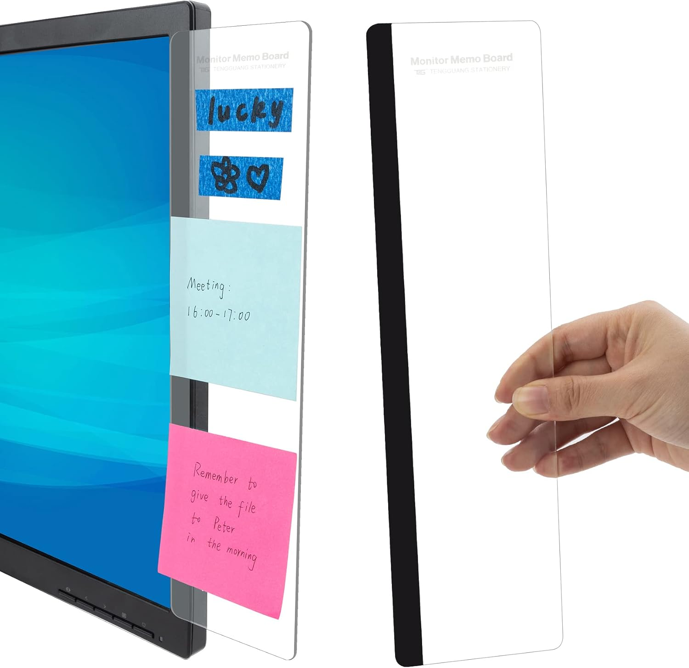

← Back to Shop


Monitor Memo Board
Never forget a task again. This clear acrylic memo board clips to the side of your monitor, keeping sticky notes and reminders exactly where your eyes already are. It's virtually invisible when empty — just a thin clear panel — and keeps your desk surface clear. The perfect desk accessory for anyone who actually needs to stay on top of their to-do list without making their workspace look chaotic.
Shop on Amazon →As an Amazon Associate I earn from qualifying purchases at no extra cost to you.